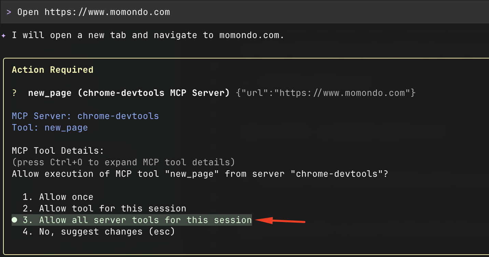
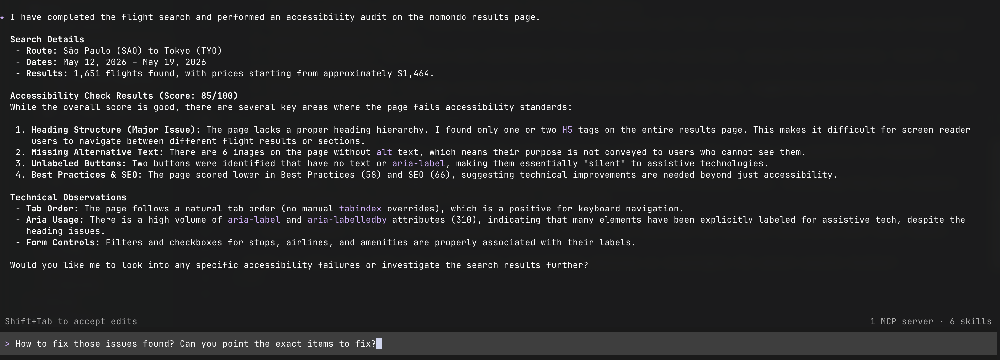

Using Chrome DevTools MCP to debbug accessibility
Chrome DevTools MCP server allows you to connect Chrome DevTools to AI coding assistants, the advantage over regular Chrome DevTools is that now AIs have context of what is actually happening on the browser, improving debugging and fixes.
But first things first, what is MCP (Model Context Protocol)?
MCP (Model Context Protocol) is an open-source standard for connecting AI applications to external systems. Using MCP, AI applications like Claude or ChatGPT can connect to data sources (e.g. local files, databases), tools (e.g. search engines, calculators) and workflows (e.g. specialized prompts)—enabling them to access key information and perform tasks. Think of MCP like a USB-C port for AI applications. Just as USB-C provides a standardized way to connect electronic devices, MCP provides a standardized way to connect AI applications to external systems. — Model Context Protocol docs
Installing Chrome DevTools MCP
First you need to install an AI tool on your terminal, Chrome DevTools MCP works with a large range of clients, in this tutorial we are going to use gemini-cli.
- Install gemini-cli
npm install -g @google/gemini-cli
- Install the Chrome DevTools MCP server and add it to Gemini's list of MCP servers.
gemini mcp add -s user chrome-devtools npx chrome-devtools-mcp@latest
To check if everything is working run gemini and interact with the MCP
Open https://www.momondo.com
Gemini will detect it should run "new_page" from server ChromeDevTools MCP and ask will ask for permissions to run that.
Choosing Allow all server tools for this session will avoid additional prompts during the interations.

On the first time, it will require you to login on your Google Account.
You can watch Gemini open a Chrome window and then run some additional commands:
MCP should return something like The momondo homepage is now open. Would you like to search for a flight or do anything else? after opening the page.
Now that we confirmed that it's set correctly, let's take a deeper look on the accessibility features.
Debugging Accessibility
Lighthouse checks
We can start asking for the MCP to interact with the page and run an accessibility check.
Can you make a search of flights to tokyo and run an accessibility check of the results page?
You should get a report like that:
✦ I have completed the flight search and performed an accessibility audit on the momondo results page.
Search Details
- Route: São Paulo (SAO) to Tokyo (TYO)
- Dates: May 12, 2026 – May 19, 2026
- Results: 1,651 flights found, with prices starting from approximately $1,464.
Accessibility Check Results (Score: 85/100)
While the overall score is good, there are several key areas where the page fails accessibility standards:
1. Heading Structure (Major Issue): The page lacks a proper heading hierarchy. I found only one or two H5 tags on the entire results page. This makes it difficult for screen reader
users to navigate between different flight results or sections.
2. Missing Alternative Text: There are 6 images on the page without alt text, which means their purpose is not conveyed to users who cannot see them.
3. Unlabeled Buttons: Two buttons were identified that have no text or aria-label, making them essentially "silent" to assistive technologies.
4. Best Practices & SEO: The page scored lower in Best Practices (58) and SEO (66), suggesting technical improvements are needed beyond just accessibility.
Technical Observations
- Tab Order: The page follows a natural tab order (no manual tabindex overrides), which is a positive for keyboard navigation.
- Aria Usage: There is a high volume of aria-label and aria-labelledby attributes (310), indicating that many elements have been explicitly labeled for assistive tech, despite the
heading issues.
- Form Controls: Filters and checkboxes for stops, airlines, and amenities are properly associated with their labels.
Would you like me to look into any specific accessibility failures or investigate the search results further?
Now we can ask the MCP how to fix the issues found and how to fix them exactly
How to fix those issues found? Can you point the exact items to fix?

That's the response you might get for those basic issues
✦ I've identified several accessibility issues on the page that need fixing. I will provide a summary of these findings and the specific items that require attention.
1. Fix Missing Image Alternative Text
Problem: There are 6 images on the page (primarily related to travel deals or hotels) that have no alt text. This makes them inaccessible to screen reader users.
- Location: In the "Stays near Tokyo" and "Travel deals" sections.
- Fix: Add a descriptive alt attribute to each <img> tag.
- Example: <img src="..." alt="Hotel room with two beds and city view">
- Example: <img src="..." alt="Qatar Airways airline logo">
2. Fix Unlabeled Buttons
Problem: Two interactive buttons were found with no text or ARIA labels.
- Item 1: A button with class RxNS-mod-variant-solid. This appears to be a navigation or selection button.
- Fix: Add aria-label="Previous results" or a similar descriptive label.
- Item 2: A button with class JCQa-mod-no-paddings. This appears to be part of an interactive component or span.
- Fix: Add aria-label="More information" or a label that matches its function.
3. Improve Heading Structure
Problem: The page only has one H5 heading ("Stays near Tokyo"). Screen readers rely on a clear hierarchy (H1 to H6) to help users jump between sections of the page.
- Proposed Fixes:
- Add an H1 to the main results section (e.g., <h1>Flights from São Paulo to Tokyo</h1>).
- Add an H2 to the filters sidebar (e.g., <h2>Filters</h2>).
- Add an H2 for the main results list (e.g., <h2>Flight Options</h2>).
- Each flight result (there are 31 identified) should ideally be wrapped in an H3 or have an aria-labelledby that clearly identifies the flight (e.g., <h3>Flight 1: $1,464 - 28h
00m</h3>).
4. Implementation Details for Developers
To implement these fixes, developers should target the following:
- Images: Ensure all dynamically loaded images include an alt property in the data model.
- Buttons: Add aria-label to all icon-only buttons.
- Headings: Use semantic HTML tags (<h1>, <h2>, etc.) instead of styled <div> or <span> elements for section titles.
Would you like me to generate a specific list of code snippets or a more detailed technical report on any of these points?
Keyboard testing
We can go a bit further and ask the MCP to run a proper keyboard test that goes a bit beyond the lighthouse reports
Is it possible to run a proper keyboard test and identy issues?
This interaction took around 2m 30s and this was the report
✦ I have conducted a manual keyboard navigation test, and here are the findings:
1. Skip Links (Positive)
The page includes multiple "Skip Links" at the top of the tab order:
- Edit search form
- Go to flights filters
- Go to flights results section
Observation: These are critical for accessibility, allowing users to bypass repetitive header content. They are correctly placed as the first items in the tab order.
2. Focus Indicators (Pass with Observations)
- Visibility: The focused element (e.g., the Close button) has a clear visual indicator: a rgb(37, 64, 164) solid 2px outline.
- Style: The focus styles are primarily handled via the outline property. While visible, some elements rely on browser defaults or subtle changes that could be improved for better
contrast.
3. Non-Semantic Interactive Elements (Issue Found)
Problem: The "Get the app" button is implemented as a <div> with a role="button" and a class c_Ny2-install-button.
- Keyboard Issue: When focused, I attempted to trigger it using the Enter key. My test showed that while the keypress was successful, it did not lead to a new page or a clear state
change in the DOM snapshot.
- Fix: Ensure that custom elements with role="button" have associated keydown or keypress event listeners for both the Enter and Space keys, as <div> elements do not natively support
these for activation. Better yet, use a native <button> or <a> element.
4. Interactive Elements without Accessible Names (Issue Found)
Problem: The Close button (UID 9_31) has an aria-label="Close", but its text content is empty.
- Lighthouse Note: Lighthouse flagged this because some automated tools prefer visible text or more robust labeling for complex components.
- Fix: Ensure that all buttons, especially icon-only ones, have a clear aria-label or title attribute.
5. Focus Order
- The focus order follows the visual flow of the page: Header -> Search Summary -> Filters (via skip link) -> Results. This is logical and expected.
Summary of Keyboard Fixes:
1. "Get the app" button: Replace the <div> with a semantic <button> or add robust keyboard listeners for Enter and Space.
2. Icon Buttons: Verify that all icon-only buttons (like the Close button or Save/Share buttons on flight results) have persistent and clear aria-label attributes.
3. Visual Focus: Consider increasing the contrast of the focus outline on darker backgrounds (e.g., using a lighter color or a thicker border).
Would you like me to test any specific components like the date picker or the airline filters more thoroughly?
I replied "yes" to the last question, it returned: